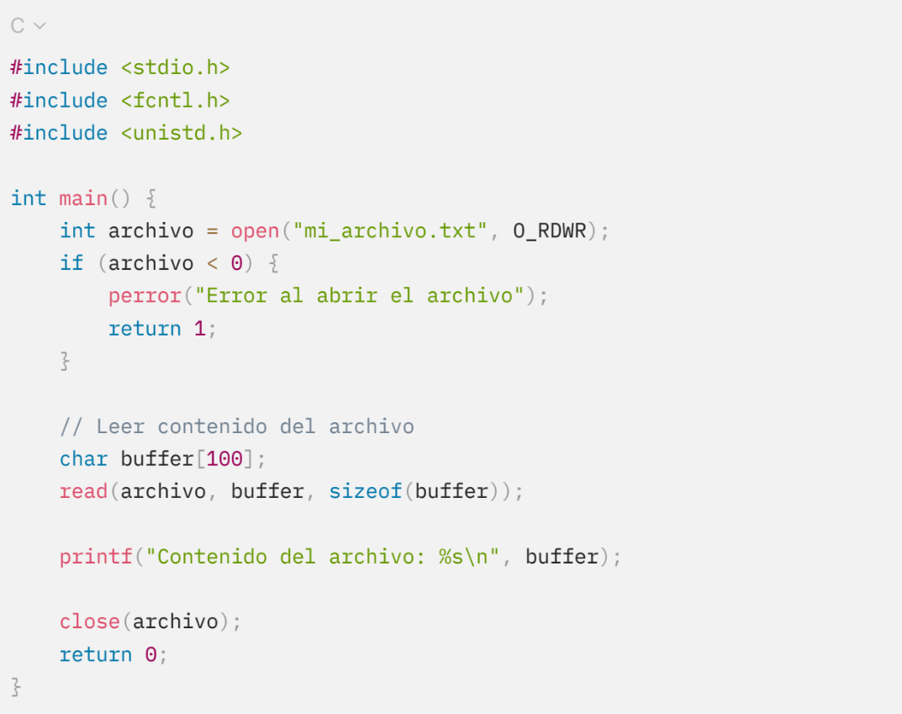

4.1.1 Capa del sistema de archivos
La capa del sistema de archivos es la encargada de gestionar las operaciones básicas que los usuarios y aplicaciones realizan sobre los archivos, como la creación, modificación, lectura y eliminación de archivos y directorios. Esta capa se sitúa entre las aplicaciones y el hardware, actuando como una interfaz que oculta la complejidad de las operaciones de bajo nivel que se realizan en los dispositivos de almacenamiento.
La capa del sistema de archivos se puede dividir en varias subcapas o componentes, cada una con un rol específico en la gestión de los datos. Estas subcapas incluyen:
Esta subcapa es responsable de proporcionar la interfaz que los usuarios y aplicaciones utilizan para interactuar con el sistema de archivos. Los comandos que los usuarios ejecutan en la terminal o los llamados a funciones específicas en una API se procesan a través de esta subcapa. Proporciona operaciones como abrir, cerrar, leer y escribir archivos. En sistemas como UNIX y Linux, estas operaciones están encapsuladas en llamadas al sistema, como open(), read(), write() y close().
Ejemplo
